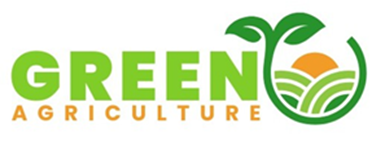
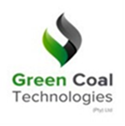
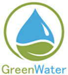
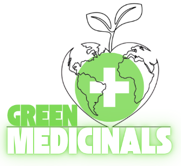

Opportunity
Identify a credible need, resource or project proposition.
Integrated project platform
Specialist capabilities spanning project finance, energy, agriculture, resource recovery, water and plant-based natural health.
Different specialisms connected through one accountable project-delivery framework.
The Green Group is the specialist operating platform supporting CJLC's sustainable project pipeline.
Each division brings a focused capability. CJLC provides the project-management, EPCM, commercial and governance layer needed to coordinate those capabilities around viable opportunities.
Division directory
Select a division to open its dedicated page.
Technology-led funding mechanisms and project governance for qualified ventures.

Plantations, controlled agriculture and integrated farming systems.

Biogas, biochar, solar agro-voltaic and waste-to-energy concepts.
Legacy slurry reclamation, processing and rehabilitation pathways.

Treatment, reclamation, reuse and operational sanitation systems.

Sustainable cultivation, processing and value-chain development.

Operating model
Identify a credible need, resource or project proposition.
Bring the appropriate divisions into a coordinated concept.
Validate scope, approvals, commercial model and governance.
Manage implementation through commissioning.
Establish practical controls and accountable performance.
Portfolio connection
Many planned ventures require more than one division—for example, agro-voltaic projects combine renewable generation, agricultural production and responsible water use.